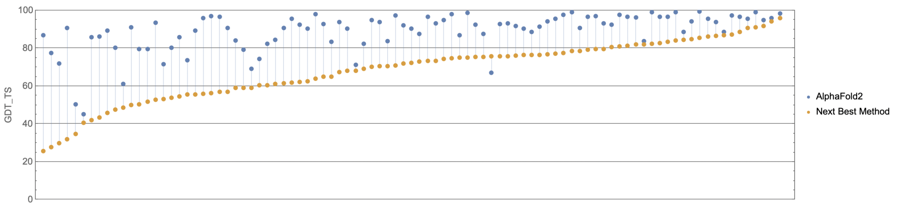
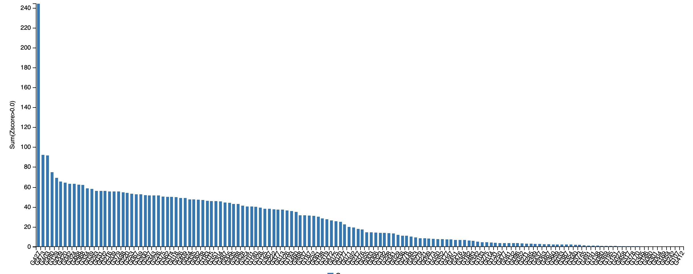

Part 1 Conclusion: Protein Structure Prediction is Solved! (Kinda)
SARS-CoV-2 protein structure prediction and open science
Researchers have worked for several decades to decipher nature’s magic algorithm for protein folding. The Soviets even founded an entire research insitute dedicated to protein research in 1967. Most of the scientists who were there for its founding are dead now, and yet the institute carries on. Although structure prediction is an old problem, biologists have never given up hope that continued improvements to their algorithms and ever-increasing computational resources would allow them one day to proclaim, “Maybe this is good enough!”.
That day has come.
Every two years since 1994, a global effort called Critical Assessment of protein Structure Prediction (CASP) has allowed researchers from around the world to test their protein structure prediction algorithms against each other. The contest organizers compile a (secret) collection of experimentally verified protein structures and then run all submitted algorithms against these proteins.
The 14th iteration of this contest, held in 2020, was won in a landslide. The second version of AlphaFold, one of the projects of DeepMind (an Alphabet subsidiary), vastly outperformed the world’s foremost structure prediction approaches, including those that we discussed in this module. The AlphaFold algorithm is an extremely involved method based on deep learning. If you’re interested in learning more about this method, consult the AlphaFold website or this excellent blog post by Mohammed al Quraishi: https://bit.ly/39Mnym3.
We will show a few plots to illustrate the decisiveness of AlphaFold’s CASP victory. The first graph, which is shown in the figure below, compares the scores of AlphaFold against the second-place algorithm (a product of David Baker’s laboratory, which developed the Robetta and Rosetta@Home software that we used in this module).
Instead of using RMSD, CASP scores a predicted structure against a known structure using the global distance test (GDT). For some threshold t, we first take the percentage alpha carbon positions for which the distance between corresponding alpha carbons in the two structures is at most t. The GDT score that CASP uses then averages the percentages obtained when t is equal to each of 1, 2, 4, and 8 angstroms. A GDT score of 90% is considered good, and a score of 95% is considered excellent (i.e., comparable to minor errors resulting from experimentation) 1.
 A plot of GDT scores for the 1st place (AlphaFold2) and 2nd place (Baker lab) submissions over all proteins in the CASP14 contest. Source: https://bit.ly/39Mnym3.
We can appreciate the margin of victory over the second-place competitor if we compare this second-place competitor against the third-place competitor (submitted by the Yang Zhang lab). The results are shown in the figure below.
 A plot of GDT scores for the 2nd place (Baker lab) and 3rd place (Zhang lab) submissions over all proteins in the CASP14 contest. Source: https://bit.ly/39Mnym3.
A plot of GDT scores for the 2nd place (Baker lab) and 3rd place (Zhang lab) submissions over all proteins in the CASP14 contest. Source: https://bit.ly/39Mnym3.
For each protein target in the contest, we can determine each algorithm’s z-score. This score is defined as the number of standard deviations that the algorithm’s GDT score falls from the mean GDT score for all competitors. For example, a z-score of 1.4 would be 1.4 standard deviations above the mean, and a z-score of -0.9 would be 0.9 standard deviations below the mean.
By summing all of an algorithm’s positive z-scores, we obtain a reasonable metric for the relative quality of an algorithm compared to its competitors. If an algorithm’s sum of z-scores is large, then the algorithm racked up lots of positive z-scores, and we can conclude that it performed well. The figure below shows the sum of z-scores for all CASP14 participants and reiterates the margin of AlphaFold’s victory.
 Sum of z-scores for every Source: https://predictioncenter.org/casp14/zscores_final.cgi.
AlphaFold’s CASP14 victory led some scientists – and media outlets – to declare that protein structure prediction had finally been solved 2. Yet some critics remained skeptical.
AlphaFold obtained an impressive median RMSD of 1.6 for its predicted proteins 1, but to be completely trustworthy for a sensitive application like designing drug targets, a predicted protein structure would need to have an RMSD nearly an order of magnitude lower.
Furthermore, about a third of AlphaFold’s CASP14 predictions have an RMSD over 2.0, an often used threshold for whether a predicted structure is reliable. And there is no way of knowing in advance whether AlphaFold will perform well on a given protein, unless we validate the protein’s structure, which causes a catch-22. For example, AlphaFold published their predictions of the structures of other SARS-CoV-2 proteins3, none of which had validated structures in 2020. Probably most of these predictions are accurate, but we cannot know for sure unless we run an experiment to verify their structures.
And although AlphaFold release the non-spike protein predicted structures, they have thus far neglected to publish their prediction of the SARS-CoV-2 spike protein, or to explain the details of their algorithm (e.g., in a peer-reviewed forum). Without these efforts, the project invites criticism from open science advocates.
Finally, because AlphaFold applies a deep learning approach, the algorithm is “trained” using a database of known protein structures, which makes it more likely to succeed if a protein is similar to a known structure. But it is the proteins with structures dissimilar to any known structure that possess some of the most scientific interest.
Pronouncing protein structure prediction to be solved may be dubious, but it is fair to acknowledge that we will likely never again see such a clear improvement to the state of the art. AlphaFold is quite possibly the final great innovation in a research problem that has puzzled biologists for fifty years.
Thus ends part 1 of this module, but there is still much for us to discuss. We hope that you will join us for part 2, in which we will delve further into measuring the differences between the spike proteins of SARS-CoV-1 and SARS-CoV-2 using the validated protein structures published to PDB early in the pandemic. Can we use modeling and computation to determine why SARS-CoV-2 has been so much more infectious? We hope that you will join us to find out.
Continue to part 2: spike protein comparison
-
AlQuraishi, M. 2020, December 8. AlphaFold2 @ CASP14: “It feels like one’s child has left.” Retrieved January 20, 2021, from https://bit.ly/39Mnym3 ↩ ↩2
-
Service, R. F. (2020, November 30). ‘The game has changed.’ AI triumphs at solving protein structures. Science. doi:10.1126/science.abf9367 ↩
-
Computational predictions of protein structures associated with COVID-19 [Web log post]. (2020, August 04). Retrieved January 20, 2021, from https://deepmind.com/research/open-source/computational-predictions-of-protein-structures-associated-with-COVID-19 ↩